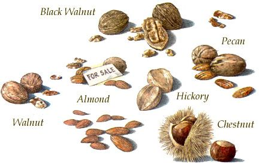
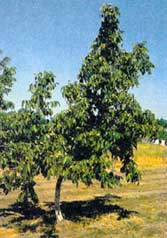
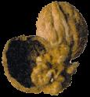
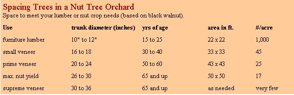
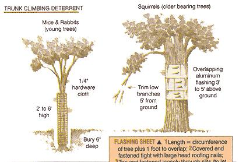
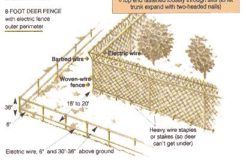
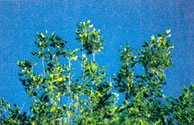

Selecting, planting, tending and harvestingthe perfecthomestead crop.
What if we told you that you could grow a supernutritious, easily stored food crop for home use, as an emergency food supply, or as a lucrative cash crop right from your half-acre vacant side lot or rocky meadow? You can do it without too much preharvest work other than routine pest control, pruning, mowing, letting a few chickens loose on the land to eat weevils and turning on an irrigation hose now and then. Interested?
Few new-to-the-country people have the foresight, patience, tree-crop knowhow and marketing savvy to grow and market nuts successfully, but the effort is worth it. Familiar species such as walnuts, chestnuts and pecans, or exotics like heart nut and pine nut, shelled and sold to the local co-op, farmer's market or roadside produce stand can fetch you $250 to $1,000 per tree each year. Bake the kernels into nutbread, muffins or oatmeal cookies, or cook up some nut fudge, and you have what many homesteaders dearly yearn for: a unique product that provides a reliable source of cash. If you have the energy, space, time and equipment, you can earn a great deal more. We've seen harvests of 30 bushels of in-husk nuts from one ma ture black walnut tree. The dehusked, dried, cracked and shelled, picked, winnowed and bagged nutmeats went for $8 or $10 a pound.
The husks and bark of walnuts and their relatives can be pressed, steeped or cooked to produce rich staining oils and rare earth-toned dyes. They are salable in quantity or can be used in small, home-brewed lots to stain your woodworking projects or to make natural dyes for wool. Walnut oil pressed from husks is also a prized finishing product for fine furniture. Naturally dyed fabrics, knitting wools and garments sell for high enough prices to make home production of finished cloth or raw products more than financially worthwhile.
Of course, there's no such thing as an easy profit. The black walnut tree is not easy to grow, and shelling the nuts is tough work. You should keep in mind, too, that demand for nuts is limited to a few markets, confectioners and bakers during the year and to the wider public during the winter holidays. In addition, many nut species that are not native to North America come from low-cost sources abroad.
Most domestic commercial growers of pecans are located in the Southeast, and most growers of other species are located along the balmy Pacific coast. However, in a smaller-scale, homestead operation, nut trees will happily grow anyplace where winter temperatures seldom fall below - 20°F. Throw in full sun, rich, deep soil, and adequate water and you're in business. As a rule of thumb, wherever peach trees prosper, nut trees can also thrive.
A successful nut crop, of course, is not a given. It takes planning, careful preparation and thoughtful investment. Like any farm, a commercial nut orchard involves a lot of hard work and is not without risk. You'd do best to learn as much as possible before diving deeply into the business end.
First, contact your state's nut growers' associations. You can find their addresses by contacting the cooperative extension service of your local university, which is also a great place to prospect for technical information on nut growing. California and New York schools are especially well-staffed with nut-culture specialists who can offer personal advice, soil tests and more. They can also direct you to retail and wholesale outlets for the best varieties of planting stock and equipment for your land and farming objectives.
Location of your nut orchard is the single most important determinant of productivity. The presence of fairly dense stands of wild nut trees indicates that Mother Nature has done the selecting for you and decided that your land is ideal for the species growing there. Don't be deluded, however, by a solitary tree that may have been planted by a former owner. Poorly sited trees may grow, flower and produce a crop of husks and shells, but it is unlikely that they will survive into fully productive maturity.
Using United States Department of Agriculture (USDA) Hardiness Zone maps as a reference, the northern limit is Zone 5 and half of Zone 4 (the strip from Kansas and Nebraska that pins through and around the Great Lakes and east to lower New England). Avoid places with low frost pockets. Zone 8 encompasses the southern limit for all but almonds and pecans.
If you want to try growing such tropical exotics as cashews or Brazil nuts, you are restricted to southern Florida. Macadamia trees are native to Australia and grow well in Hawaii and southern California. Pistachios can only be raised successfully in California.
Several species of tiny, pearly-white pine nuts (not much bigger than a grain of cooked rice) have been enjoyed worldwide for thousands of years. One pound contains about 1,500 of the delicate nuts, and they sell for several dollars an ounce! Our native species, the piñon pine, are a traditional staple of native American tribes of the southwest. Tons of them are still harvested by hand each year from a scrubby, wild pine of the desert. Potentially, several species of native and imported pines could be grown on dryland plantations in the arid Southwest. All you need do is wait (they take many years to grow), keep trees free of parasitic mistletoe and pick carefully. Mature cones are gathered, dried and crushed to release the nuts, which are traditionally winnowed in the wind like wheat from chaff, then toasted or eaten raw.
Members of the juglans family (walnuts, butternuts, hickories and pecans) feature a long taproot that grows 4' to 5' deep in its first two or three years and over 100' at maturity. These do best in the deep soils of plains and river valleys, where they can tap deep aquifers and access deep-soil nutrients to help resist insect infestations or droughts. Some prefer more moisture in the soil than others, but all need well-draining, loamy soil.
Acidity/alkalinity requirements differ slightly between genera, but all fall close to to the acid side of neutral (pH 7). Nut trees feed deep, so do not expect to modify the soil as easily as you can for annual garden crops. Crucial minerals, such as zinc and iron and other trace elements can be provided through leaf-sprays, injections or drilled-down soil supplements. It's better to choose soil, however, with all the essential nutrients in place. Have your prospective orchard site's soil thoroughly tested, analyzed and evaluated by a professional.
"Shelled nuts sold to the local coop or farmer's market can fetch you $250 to $1,000 per tree each year."
In general, nuts prefer locations around bodies of water - large rivers, lakes or oceans - which will experience more moderate temperature fluctuations and extremes than inland. As with any tree crop in chilly areas of North America, southern slopes of low hills offer the best sun and quickest drainage of late-winter/earlyspring thaw runoff that can kill buds and harm the crop.
If you have the space, time and equipment, it is best to clear and level the land for an orchard that can also have a 100-foot clearing (to help keep the squirrels away). You'll also need to enrich the soil by growing and plowing under green manures for a year or more.
Other than chestnuts, which are fairly reliable annual bearers, conventional varieties of nut trees produce well only every other year. Plant several varieties to get optimal annual production.
Most home and commercial orchards are planted with three- to five-foot tall, three- or four year-old nursery-grown, Wafted saplings. Your best bet is to plant viable nuts from several outstanding, well-proven varieties in the orchard so they never need to be moved. That way you can save planting-stock money, guarantee success and harvest nuts over a longer season as various strains ripen. Grow melons, strawberries, beans or another low crop between tree rows for the first few years. In later years, interplant with a nitrogen-fixing legume. This has been proven to hasten maturity of the nut trees and encourage growth of longer trunks for lumber. Also consider seeding with a stout perennial, such as hay grass, to hold down weeks.
You can set nuts in 6" deep with nothing more than a tulip-bulb planter. A good plan is to plant four or five seeds together in a 22'x 22' grid and thin to the most robust, straight-trunked seedling. Then, as trees grow through the several marketing sizes (see " Spacing Trees in a Nut Tree Orchard "), you can thin to the straightest, most productive trees.
Many nurseries sever young seedlings' tap roots to encourage shallow root growth. This is an advantage if your soil is shallow, but it's contrary to a tree's natural growth pattern.
Unearth and replant young juglandaceae with taproots intact. Though it requires deep digging, this method is cheapest for home orchards, and best for young trees.
Self-Storing Self-containment indicates sufficiency in humans - it's also quite desirable in a cash crop. A nut's hard shell is a natural storage container that prevents bruising of the meats and deters predation by in sects or rodents or damage from molds due to rainfall or humidity. Indeed, most husked nuts can be chilled or frozen in the shell and will keep for six months to a couple of years without a noticeable change in appearance, flavor or texture. This generous shelf life gives nuts an advantage over oth er cash crops. Nuts self-store until sold - an advantage, as most unshelled nuts are purchased by consumers during the winter holiday season - several months after the autumn harvest.
It is most natural to plant nuts or young trees where they will stay, but it's more con venient to grow them in a smaller nursery plot. Set nuts in 6" deep and 1' or more apart in rows 3' to 6' apart if you're planning to trench both sides for removal. If you unearth the seedling trees with a rented nar row-bucket back hoe or a trencher that's run along each side of the row, you can dig down about a yard. This way you can retrieve most of the young root. Then, make another pass in the orchard to be with the trencher to create a trench deep enough to set the roots in straight. It's a lot of work, but you're planting for yourself, your children, grandchildren and great-grandchildren.
When transplanting nursery-plot-grown seedling trees, prune the top back by at least one-third to compensate for unavoidable feeder-root loss. Set the root in straight down to the same level the tree grew in the nursery, tamp in well, fill trench and water daily for two weeks.
Since near-perfect veneer logs from black walnut and other nutwoods can sell in the $1,000 range or better (see " Nutwood Lumber "), it is worth your while to coax your nut trees to grow straight and blemish free. Think of it as an investment: A log 3' in diameter at the base takes 50 to 70 years to grow and can sell for a five-figure fee.
To produce a mill-standard, 8'-long veneer log, the tree must contain at least nine vertical feet of straight, uniform and smooth bole - or lower trunk. You must prune away bole-disfiguring limbs with care (young trees will try to fork close to ground level). As soon as you notice the branching tendency, snip off the weakest branch and stake the remaining branchlet to grow straight-leaning, if at all, into the prevailing wind.
Examine the rows often, as many cutback seedlings will rebranch several times in the first year. With grafted stock, cut out any sprouts from the rootstock trying to take over from underground or below the graft, no matter how vigorous they may appear. In top-pruning, remove all branches that compete with the central leader. The more frequently you prune, the less is removed at one snip and the less stress you cause the tree. Never remove more than 60% of branches at one pruning. As the top develops, clear away all limbs beneath 9'. The scars will be contained in the central heartwood of the adult tree.
In the retained leafing crown, keep only stout, widely angled limbs. Those growing at sharp angles will tend to split away and can accumulate potentially damaging wet bark.
To keep your crop from being ravaged by squirrels, which can sock away an entire acre-sized planting in less than two weeks, you'll want to take some defensive measures. To deter trunk-climbing nut lovers, tack a 3'-wide strip of aluminum flashing to the trunk, 5' off the ground. Use ring-head nails and leave enough protruding so they can be removed and reset as the trunk expands and threatens to split the aluminum or be girdled by it. Overlap narrow sheets top over bottom so animals can't get a clawhold on the lip of a lower sheet (see illustration ).
Deer and other nibblers, such as rabbits and other domestic grazers, will happily nip off succulent young nut tree sprouts as they appear, and hogs will root out and eat unsprouted nuts and seedling trees. Unless your orchard is constantly patrolled by you or your critter-controlling hound, you'll want to build a sturdy fence.
As far as insect pests are concerned, a flock of free-range chickens in the orchard will help keep them under control. Adult birds are especially useful against insects such as the nut-hungry pecan weevil. Chickens will also gobble wormlike larvae of such pests as the pecan nut casebearer as they emerge in spring, as well as the grubs of other bugs. Orchard hygiene is also important. Gather and burn or deep-compost all prematurely fallen nuts to prevent insects that might be inside them from escaping to metamorphose in the soil.
Mowing orchard grass is essential to reduce competition, especially for young trees. Once trunks are tall and tough-barked enough, you can run a beef steer or a flock of sheep in a well-fenced orchard to keep grasses down, though you'll still have to mow off plants the critters won't devour. Organic gardening/farming catalogs such as Peaceful Valley Farm Supply (Phone: (888) 784-1722; fax: (530) 272-4749; Web site: www.groworganic.com can point you toward biological insect controls and organic fungus controls.
On smoothly graded, well-mown commercial orchards, most nut varieties can be shaken from trees with a $50,000, self-propelled, hydraulic telescoping beam crane. On less well-prepared, less affluent sites, they are traditionally banged from branches with bamboo poles or shaken loose by a small truck nudging the (temporarily) well-padded trunk. They can then be windrowed by a $2,500 power broom and vacuumed into a dump truck. Of course, they can also be swept into piles with a broom and shoveled into the bed of your 1978 Ford pickup.
Husks can be left to dry a while, then crushed by the power husker that most nutbuyers bring to the pickup site. Or, you can put them on a hard surface and run them over with a truck (with deflated tires) pulling a lawn or a blacktop roller. Lastly, you could dump them into a homemade revolving bin (such as a 55-gallon oil drum set on rollers) with a heavy iron pipe or cast-concrete cylindrical crusher.
When selling, find out local food-safety regulations and obey them to the letter:
Removing kernels from pecans and almonds is easy. Walnuts and other tough-shelled nuts demand stronger gear. Place a nutshell, tip-shaped curve into the jaws of strong wire nippers or the blades of a long-handled tile-trimmer to remove nut tips. Then, split the shells with an industrial-strength nut cracker available from nut-supply and nut-tree merchants. Our own favorites are the Potter Walnut Cracker (about $200) and, for soft-shelled nuts, the Rocket ($30 to $35) from the Cumberland General Store's Old-Time General Merchandise catalog (#1 Highway 68, Crossville, Tennessee 38555; Phone: (800) 334-4640; Web: www.cumberlandgeneral.com.
Shelled nuts can be stored in airtight containers in a freezer for up to two years. In shell nuts will keep for up to a year in open-mesh sacks on sound wood pallets on the dry floor of an open-sided, shaded building or a cool, dry cellar.
To market your harvest, find out state and local food-safety regulations and obey them to the letter. Then, you'll need a scoop-tray scale, a roll of clear bags and a sealer from a grocery supplies firm. Design and print up a colorful label displaying content weight and featuring a round white blank label for a retailer to mark in the price. Leave free samples with local retailers in a first sales call, then call back to take and fill orders. Renew stock weekly to keep it fresh. Bake undamaged nuts from shopworn containers into cookies or fudge and peddle that around. Then, when you get rich and famous send MOTHER a few samples, a photo and your success story.
Related info:
Nutwood Lumber
|
 |
 |
 |
|
 |
 |
 |
|
 |
|
|